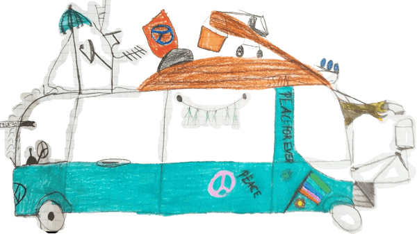

Workshops
I offer philosophy workshops with children and youth. Each session is tailored to children’s ages and needs. You
can contact me directly for a personalized plan.
Generally, I work with children in groups for 60 to 90 minutes. They are encouraged to explore themes and
questions related to philosophy, such as what is freedom?, what are feelings?, or what makes a good friend?,
what are rules?. Different materials and tools, such as games, stories, books, videos, and audio, are used to
encourage reflection and analysis of their own and others’ ideas as well as imagined scenarios, also known as
thought experiments.
For 6 to 12 year olds:
A question is introduced through storytelling using tools and materials such as picture books, photographs, or
short video clips that frame a particular issue. The teacher supports the kids in discussing and exploring the
question and issue by providing additional questions and examples. The teacher’s role is also to encourage a
respectful and inclusive discussion environment. The unit ends with each child sharing her or his thoughts about
the discussion and what they experienced inside themselves and with the other participants.
For 13 to 18 year olds: Questions or themes are introduced using tools
and materials such as personal storytelling, video clips, photographs, music clips, and short texts. The kids
discuss the question(s) or theme(s) drawing on the tools and materials as well as their own experiences. With
children in this age range, the teacher’s primary role is to facilitate a respectful and inclusive discussion
environment and to take part in the discussion as an equal participant. The aim is to create a space where kids
become their own guides by learning how to explore thoughts and ideas together in a respectful, inclusive, and
in-depth way. The unit ends with key takeaways and the kids sharing their thoughts about the session, what they
learned about themselves and the others, and how they felt about the experience.
My qualifications and
experience
For over 10 years, I have been studying
and teaching philosophy at universities worldwide: from Romania to Canada, to Slovenia, and now here in Vienna,
Austria. Along the way I completed a PhD and two Master’s degrees in philosophy. In 2019, I became a certified
teacher of philosophy for children. Most recently, I have been working with the Wiener Institut für
Kinderphilosophie (WIKiPhilo) as a discussion leader, or ‘Gesprächsleiter’.

Why work with me?
Good question. What do you think?
Each person has their own reasons why they
work with me. For some, a friend’s positive recommendation makes the difference. For others, they like what they
read on my website and my qualifications and experience. Some people find those reasons through emailing and
calling me.
If it helps, I can offer my own
perspective as a parent: if I were looking for someone to philosophize with my 10 year old son, I would want an
experienced and knowledgeable philosopher who has a big heart and is full of excitement for philosophy and
working with kids. An important characteristic would also be someone who finds value and joy in continuously
learning and growing both as a philosophy teacher and everyday person.
What matters to you?